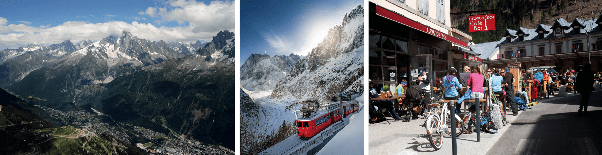

Discover Chamonix in the French Alps - home to Europe's highest mountains including Mont Blanc and find out how to make the most of your trip.
Discover Chamonix
Chamonix, the mountain playground of France, has been on the tourist trail for centuries. Today it is seen as an adventure destination, whereas the truth is that the town has been a place to go for poets, musicians, writers and painters for longer than for adrenaline junkies.
The first English tourists came through in the 17th century to view the mountains and glaciers, followed by painters, poets and writers, many of whom became climbers if only to visit these wonders. These renaissance men and women make up a great part of the populace today. Chamonix has developed a vibrant culture, different from the other valleys in the Haute-Savoie. Agriculture played only a small role in the town’s development, unlike in the surrounding valleys, due to the steepness and hostility of the environment. Tourism drives the town today as it did in the 18th century, but whether you come here to relax, or quite the opposite, Chamonix has you covered.
Chamonix-Mont-Blanc is a French town situated below the largest mountains of the European Alps and below its namesake peak, Mont Blanc – the highest mountain in Western Europe. Chamonix sits in a corner of eastern France bordering both Switzerland and Italy. Part of the Haute-Savoie department in France’s Rhône-Alpes region, it has a respected heritage as the premier site for mountain sports.

The history of Chamonix Mont Blanc
Chamonix was first noted in 1091 when monks settled on the banks of the river Arve, becoming known as the Priory of Chamonix. In the following years, more settlers arrived in the valley which came under the rule of the town of Sallanches in the valley below. Chamonix’s rural population of mountain farmers raised animals and grew a limited number of crops in the summertime. This continued for hundreds of years until travellers started to arrive in the valley to explore its mountains and glaciers.
It was in 1741 that two English travellers, William Windham and Richard Pococke, arrived in the ‘Chamouny’ valley and became the first to document it in a series of literary journals that brought Chamonix to the world's attention. Windham, an aristocrat and notable philanderer, was the first to name the glacier at Montenvers the ‘Sea of Ice’.
It was those mountains and glaciers that brought ever more people to the valley. After Jacques Balmat and Dr Michel-Gabriel Paccard made the first ascent of Mont Blanc in 1786, Chamonix came to prominence in the climbing world. In 1916 Chamonix changed its name to Chamonix-Mont-Blanc to reflect the popularity of the mountain. Chamonix hosted the first Winter Olympic Games in 1924 and started building ski lifts to take advantage of the new-found interest in downhill skiing. From the 1940s on, tourism grew exponentially in the valley with the winter season going from strength to strength and investment in ski lifts and tourist accommodation unrelenting.
Chamonix Attractions
Aiguille du Midi
The Aiguille du Midi is Chamonix’s most iconic peak and the start of the famous Vallée Blanche ski run. The only way to access the top is by the spectacular Téléphérique de l’Aiguille du Midi which opened in 1955 and runs from Chamonix Sud to Plan d’Aiguille, with a second téléphérique to the summit. It holds the record as the highest vertical ascent ski lift in the world.
The lift station can be found in Chamonix Sud, an easy walk from the centre. If you want to get an early start or visit at a specific time it’s best to buy your tickets in advance and arrive early. In summer, if you have the time, you can travel to Italy via the Télécabine Panoramic Mont-Blanc and then on to the Skyway Monte Bianco down to Entrèves in Italy’s Aosta valley. The temperature at the top of the Aiguille du Midi drops below zero even in the height of summer and there is usually snow or ice underfoot, so take appropriate clothing. Be aware that ski lifts can break down or stop due to bad weather.
Le Brévent
The Télécabine de Plan Praz whisks you to a heady altitude of 1,999 metres at Plan Praz. The view from here is spectacular and a busy restaurant makes the most of it. The Téléphérique du Brévent takes you to the 2,525-metre summit at Le Brévent is a short walk away and there is generally a queue and a short wait to ascend to the top.
Montenvers & Mer de Glace
Departing from Chamonix centre, the rack-and-pin- ion railway takes around 20 minutes to deliver you to Montenvers at an altitude of 1,913 metres. The line was finished in 1909 and the viaduct and parts of the line can be seen from the valley floor. In the height of the season you should book tickets as it gets busy and crowds push and shove to get onto the train. Once aboard it’s a pleasant trip, the train climbing steeply up through trees and tunnels and at one point pauses for the returning train to pass.
From the train station, the Télécabine de la Mer de Glace and 470 steps (100 more than in 2015, and 467 more than in 1998) take you down to the Mer de Glace and the man-made tunnel within it. More people have been underneath this glacier than any other and the journey requires a certain amount of endurance to steps.
Things to do in Chamonix
Chamonix may be best known for its mountaineering and skiing, but it is also a destination for proximity flying, paragliding, trail running, mountain biking, hiking and slacklining. The town also has rafting, golf and tennis. The Richard Bozon Sports Centre features an indoor swimming pool with a skylight view of the mountains and an attached outdoor pool. Tennis and squash courts, a gym, an indoor climbing wall and an ice rink can also be found on site. Next to the sports centre, the QC Terme Spa is now open.
Skiing
Snowboarding
Snowshoeing
Mountaineering
Climbing
Hiking
Trail running
Golf
Tennis
Swimming
Rafting
Luge
Paragliding
Skateboarding
Mountain biking
Where to stay in Chamonix
A wide variety of accommodation is available right in the centre of Chamonix from the 5 star Hotel Mont Blanc or Le Cristal de Jade apartments to smaller boutique hotels like Le Faucigny or the well situated Alpina. Look outside the centre for slightly cheaper options.
The closest international airport to Chamonix is Geneva in Switzerland, approximately 1 hour 10 minutes away using the autoroute (toll applicable).
Bus
The Chamonix bus serves the whole valley with a regular schedule from Servoz to Le Tour. It’s free for holders of the Carte d’hôte or a ski lift pass, excluding the Chamo’Nuit bus.
Train
The SNCF train station in the centre of Chamonix is the hub for the Mont Blanc Express train which runs from St Gervais/Le Fayet through Chamonix and on to Switzerland.
Car
Chamonix is easy to get to by car from any direction. The A40 autoroute leads directly to Chamonix from within France. From Switzerland, the drive over the Col de Forclaz and the Col des Montets is equally as impressive. From Italy, access is via the Mont Blanc Tunnel.
Ski lifts
The Chamonix valley has a variety of ski lifts all available on one lift pass. Many of which are open in the summer.
Read the full story in the Chamonix-Mont-Blanc travel guide in which we share our 20 years of experience of the valley to help you make the most of your trip.
Available as a 180 page softcover book or as a eBook for Kindle or Apple books, it's the perfect travel companion.